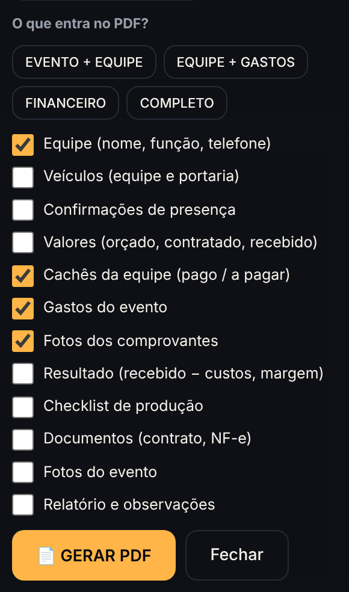
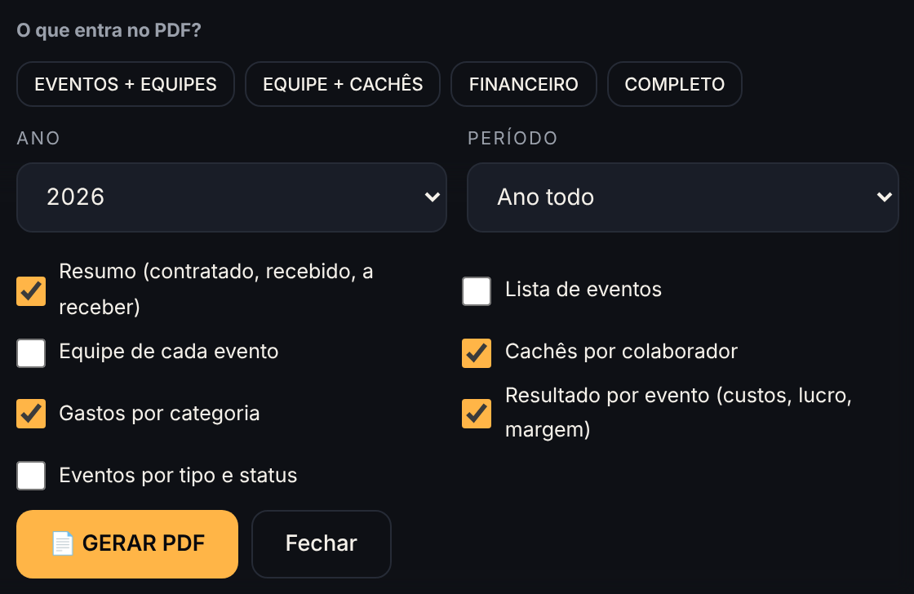

Você escolhe o que entra no PDF — só o evento e a equipe, a equipe com os gastos, só o financeiro ou tudo.
Itens: equipe, veículos, presença, valores, cachês (pago / a pagar), gastos, fotos dos comprovantes, resultado (lucro e margem), checklist, documentos, fotos do evento, relatório e anexos (os PDFs da equipe, o contrato e a NF-e entram inteiros no fim).


Na página Eventos, botão Relatório de gestão (PDF). Escolha o ano e o período (o ano todo ou um mês) e os itens: resumo (contratado, recebido, a receber, custos, resultado), lista de eventos, equipe de cada evento, cachês por colaborador, gastos por categoria, resultado por evento e eventos por tipo e status.
Os itens marcados ficam guardados neste aparelho: da próxima vez é só tocar em GERAR PDF. Também há a escala da equipe (no dossiê) e o relatório mensal dos lançamentos (botão PDF DO MÊS, em Lançamentos).